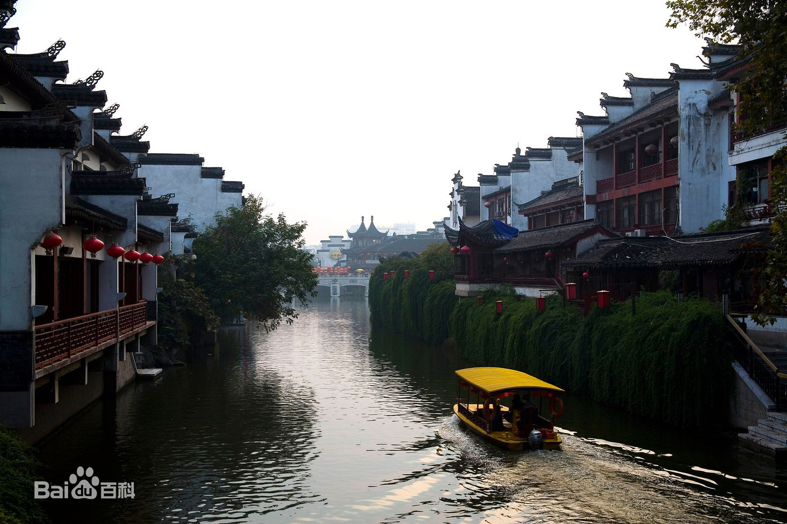
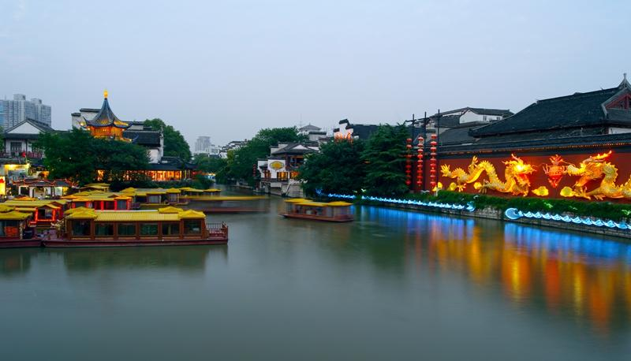
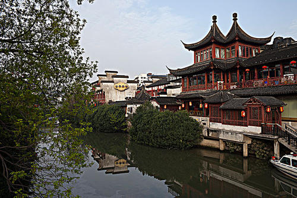
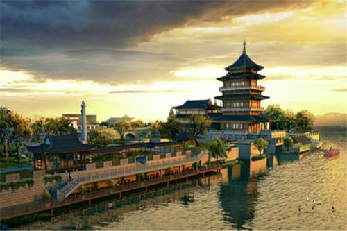
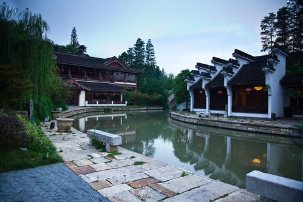

- 
- 
- 
- 
- 
秦淮河
成人票：30元/人；儿童票：10元/人；学生票：20元/人
简介
秦淮河是南京的文化摇篮，是江宁的母亲河。
相传在7000万年以前，秦淮河自然淋漓的雏形就已形成。秦淮河本名龙藏浦，汉时称淮水又称小江，唐代以后称秦淮河。
秦淮河由南向北纵贯江宁区，主河道一百多公里，是我区境内最大最主要的水系。沿
河两岸圩田地区历来是鱼米之乡，丘陵地区依山傍水风景如画，不但促进了江宁古城镇的发育
，而且养育着世世代代的江宁人民。
屈曲秦淮济万家，这里流淌着历代无数篇章。吴大帝孙权筑淮立埭，凿通云阴中道。明朝
初期天生桥工程开建后，秦淮河与溧水河又成为通往皖南、浙北的水运航道。特别是进入金陵
城内的那一段号称十里秦淮，更是红楼鳞次栉比，画舫游船首并尾接，成为文人骚客游憩的必
至场所，使得秦淮河流域的历史故事更加多姿多彩。
秦淮河历史故事以人为主线，山水结合，天人合一。穿越时空隧道从远古走来，既神奇夸
张，又涉及江宁人民的生产、生活、经济、文化等方面，具有鲜明的地域特色，形成了 《小秦
王鞭山开河》、《秦始皇赶山塞海》、《葛仙翁秦淮河显灵》、《秦淮河与湖熟板鸭》、《林
（灵）顺兴建湖熟桥》和《河定桥的来历》等一系列历史故事。
秦淮民居建筑群（河房）
河房也叫“河厅”，意即河两边的房屋，特指南京秦淮河畔依水而建的房子。
清代作家吴敬梓的《儒林外史》中有很多关于河房的描述。历史小说《白门柳》也多次提到南京秦淮河畔的河房，如余家河房、桃叶河房等。
内秦淮河河房集中在内秦淮河两岸，是非常珍贵的历史文化遗存。
史料记载:
秦淮河房，夹淮水而居，绿窗朱户，两岸交辉。夏月水漫，画船箫鼓，游兴至夜，为天下丽观。
秦淮河房的风格是随着历史的发展慢慢形成的，秦淮河房的建造最早可以追溯至孙吴时期。当时，吴的国君孙权
在南京定都，并在秦淮河一带修建都城，秦淮河两岸也就出现了河房。
随着商业的发展，两岸逐渐繁华，旖旎风光吸引了很多文人骚客、达官贵人的目光。吴代之后，一些有钱人也开始到秦淮河两岸修建河房居住，
比如东晋时期的王导、谢安等豪门大族就在乌衣巷附近临河修建宅院。
明代，明太祖朱元璋定都南京，秦淮河一带更是商贾云集。因为用作考试用的贡院修建在秦淮河畔，每年都有数万
考生涌进南京，于是在贡院周边诞生了一大批书肆、客栈、茶楼，王公贵族、达官显宦纷纷在此盖楼建宅，秦淮河房越发繁华起来。
秦淮河河房的建筑风格和南京古民居房的建筑风格一致，有“青砖小瓦马头墙，回廊挂落格扇窗”的特点。


秦淮历史文化
秦淮河两岸有大小集市100多处，东昊以来一直是繁华的商业区和居民区。历代
有许多过定官贵人住在秦淮河畔，如东晋时的主要谋士王导和谢安等。尽管隋唐
以后，秦淮河畔渐趋衰败，但是，仍有许多文人墨客在这里凭吊吟叹。最有代表
性的诗作是唐代著名诗人刘禹锡的《乌衣巷》：“朱雀桥边野草花，乌衣巷口夕阳
斜。1旧时王谢堂前燕，飞人寻常百姓家”。秦淮河两岸建有不少佛寺，东晋时的瓦
官寺，南朝时的安乐寺都非常著名。东晋时大画家顾恺之为瓦官寺画了《维摩诘居
士像》，雕塑家戴逵父子铸造过五尊铜像。安乐寺里有著名画家张僧繇画的四条白
龙，留下了“画龙点睛”的故事。
明清时代，秦淮河畔人烟稠密，金粉楼台，十分繁华。秦淮河畔的夫子庙、贡院
是封建统治者笼络和挑选人才的地方。明代吴敬梓的小说《儒林外史》中，对此
有深刻的揭露。清代戏曲家孔尚任的《桃花扇》以秦淮河为背景，歌颂了歌妓李
香君的高尚情操，揭露了统治阶级内部的矛盾和腐败，描写了国破家亡的悲剧。